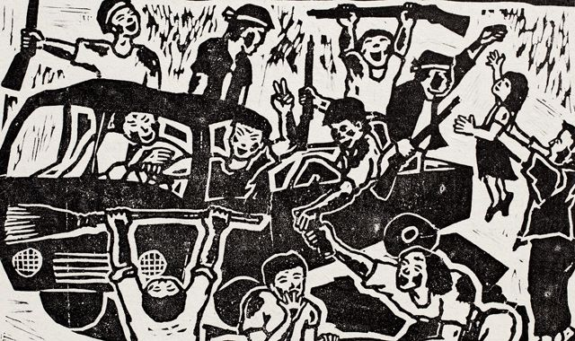

Beyond the Detail: Censorship at the Gwangju Biennale
The Gwangju Biennale was founded in 1995 in a spirit of renewal, transformation, and commemoration. Not long before the Biennale was founded, many students and citizens of Gwangju lost their lives at the Gwangju Uprising (May 18-27, 1980). The attempted peaceful protest was a reaction to the current government, President Chun Doo Hwan, and Chun’s expansion of martial law. He officially took control of the government on May 18, 1980, the same day the protests in Gwangju began. President Chun had just gained power after a coup d’etat preceding the assassination of the then President, Park Chung Hee. The current South Korean president, Park Geun Hye, is Park Chung Hee’s daughter. In 1961, former President Park took over the country with a military coup and began South Korea’s aggressive turn to industrialization. His administration laid the foundation of the cultural and economic power we see emanating from South Korea today.
Censorship and government control is still a major thread at the Biennale, where a painting concerning these South Korean leaders has caused significant upheaval. “Restricting Eyes”: Lee Yong-woo on Gwangju Biennale Censorship by Julie Baumgardner explains why Lee Yong-woo, its cofounder and president, resigned his position—censorship of artist Hong Seong-dam’s painting Sewol Owol. Intended to be part of a commemorative exhibition at the Gwangju Museum of Art (GMA) celebrating the Biennale’s 20th anniversary, the painting is a raw tribute to the tragic sinking of the Korean ferry last spring which killed nearly 300 people, mostly high school students; it is an artwork created in the true spirit of the Gwangju Uprising. When presented to the GMA officials mere hours before the opening on August 8, the officials called a meeting and decided to postpone any decisions until the middle of September. At that point Hong withdrew the painting. In addition, at a press conference Lee stated, “I don’t think it is taboo to satirize a country’s president…Freedom of artistic expression should not be restricted by the government just because they have the exhibition budget under their control” Lee alludes that the government has more say in the Biennale than the public may realize.
The imagery of Sewol Owol, named for the ferry, “Sewol,” and the month of the 1980 Uprising, “Owol” (May), implicates President Park Geun Hye’s government and indicates she is still controlled by her father’s legacy. After presenting the original painting and meeting resistance, Hong attempted to veil Park Geun Hye creating another version of the painting by putting a chicken head over her head (critics often refer to President Park as a chicken). This solution was not satisfactory to the Biennale’s organizing body. The reactions of the organization unfortunately reiterate the importance and necessity of art like Hong Seong-dam’s.
This is not the first time Hong has been involved with political resistance and art. In fact, Hong was part of the Uprising that inspired the Biennale. The artist produced posters and woodcuts to communicate with the citizens and to record events. Due to his actions, Hong was imprisoned and tortured. Eventually he was named an Amnesty International prisoner of conscience. Despite his imprisonment, Hong hasn’t avoided difficult conversations: hence the controversy at the Gwangju Biennale this year.
Many online sources written in English, including the Art in America article mentioned above as well as the New York Times, the Economist, and The Korean Herald, addressed the censorship. Most of the visual representations of the mural are just a detail that focuses on President Park Geun Hye (such as the detail used by Art in America). Though the reason for censorship, this image is only a fraction of the entire artwork. With the flurry surrounding the censorship, the entire artwork requires viewing and analysis. After the controversy arose, the artist posted an image of the entire painting on his website revealing a vast, dramatic, and visceral scene. If you can read Korean, the artist explains the painting in detail here.
The original painting
The altered painting, with chicken head
Hong’s style is simple, a slightly surreal caricature of reality. He clearly conveys complicated layers of people and scenes into one massive statement. In the center of the painting, Sewol is turned upside down with bodies pouring out of it. Instead of heading towards an abysmal fate, Hong retells the story; the passengers float through the seawater in an organized path toward a large, mystical-looking fish (a reoccurrence in Hong’s work). The passengers aboard the fish wave to the viewer, presumably headed toward safety instead of the tragic fate of reality.
The ferry is supported by two large figures in the foreground. On the right, a woman clothed in basic traditional attire holds a bowl of kimbap. Kimbap has particular significance in this case because student and citizen protesters ate it during the Gwangju Uprising. On the other end of the boat, just left of center, a man in similar dress holds a rifle and has an agitated expression. The two figures seem to be from the 1980 Uprising, likely showing camaraderie for the victims of the ferry accident. Both the man and woman look away toward the rest of the painting on their respective sides.
The woman looks to the right at a scene of protests, demonstrations, and mourning. To the immediate right of the woman, a crowd surrounding a cooking pot represents the community of protesters and the Gwangju citizens who shared their food with them. Above that grouping, three Korean comfort women look to the right. (Comfort women are Korean women who were forced into sexual slavery by the Imperial Japanese Army. There are only a few left; many have died of old age. To this day, Japan still hasn’t apologized for the war crime and because of that, there are weekly demonstrations.) Next to the comfort women there’s a cluster of people in yellow raincoats, the color used by demonstration participants to commemorate the victims of the ferry sinking. They hold a sign that says “가만있지마라.” According to my colleague Hanna Yoo, the literal translation is “‘don’t stay still/silent,” and the colloquial translation is “stand up and act out.” The sign is a play on the words of the Sewol Ferry captain to the students and passengers. Instead of quickly evacuating the ship, the negligent captain told the students to stay still and stay calm. Next to that group, three figures hold candles, which also symbolize commemoration of the victims. Further to the right, a ghostly Shinzō Abe, Prime Minister of Japan, looks moribund as he views the disastrous nuclear leak.
Further down the painting, Lee Myung Bak, the South Korean President preceding President Park Geun Hye, is satirically portrayed as a fish with a human head. President Lee had an unrealized plan to develop area around four major rivers in Korea. Former President Lee’s plan did not consider environmental factors; Hong is a critic of the project and the Lee administration in general, depicting the river as a woman’s body being attacked by forklifts.
The left side of the painting is much more aggressive and violent than the right, consisting of a visual smattering of scandals surrounding President Park Guen Hye. Almost as a shadow, to the immediate left of the man supporting the ferry, Archbishop Yoon Gong-hee leans towards the scene to the left with clenched fists. Archbishop Yoon actively works to spread the work of the Gwangju Uprising. Below the massive foot of the man supporting the ferry lies former President Chun Doo Hwan. A Marilyn Monroe-like figure, soccer ball, and baseball glove surround him, referencing his 3S policy (sex, screen, sport); he created the program to distract the people from political resistance.
 The
much-talked-about
image of President
Park Geun Hye as a
scarecrow being
held back by her
father, former
President Park
Chung Hee, is to
the left of the man
supporting the
upturned ferry.
Just below
President Park’s
stump, there’s a
smattering of men
in unofficial conservative extremist Korean uniforms burning the effigy of the
current leader of
North Korea, Kim
Jong-un. Below the
gathering of
military men, three
people huddle
around a desk. The
woman in the purple
shirt represents
one of the nine
National
Intelligence
Service agents
accused of
attempting to sway public opinion in favor of Park Geun Hye, which is illegal for a government
agency.
The
much-talked-about
image of President
Park Geun Hye as a
scarecrow being
held back by her
father, former
President Park
Chung Hee, is to
the left of the man
supporting the
upturned ferry.
Just below
President Park’s
stump, there’s a
smattering of men
in unofficial conservative extremist Korean uniforms burning the effigy of the
current leader of
North Korea, Kim
Jong-un. Below the
gathering of
military men, three
people huddle
around a desk. The
woman in the purple
shirt represents
one of the nine
National
Intelligence
Service agents
accused of
attempting to sway public opinion in favor of Park Geun Hye, which is illegal for a government
agency.
To the left of President Park is a collection of men associated with major political scandals surrounding the president. Kim Ki-choon, the man in the black suit with black glasses and his arms around former President Park Chung Hee, was a key figure in the former President’s corrupt regime and is the current President’s Chief of Staff. Just to the left, in bright briefs and brown glasses, Yun Chang Yoon, a former spokesperson for current President Park, giggles at a man hanging upside down naked. His gestures and the positioning of his hands and mouth in relation to the hanging man’s genitals are suggestive. Yoon was accused of sexual harassment of a female intern during a visit to the U.S. with President Park. Below Yoon, chuckling in a brown suit and red tie, stands Moon Chang Geuk, whom the current Park administration nominated to be prime minister. Moon withdrew his nomination when the Korean Broadcasting System released an extremist Christian speech Moon made stating “God planned the Japanese Occupation.” Below him, in a tan suit and pink tie, sits Lee Kun-hee, the chairman of the Samsung Group. Samsung and the government are closely intertwined and likely couldn’t exist without the other.
The depth of criticism in Hong’s Sewol Owol, goes much further than merely implicating Park Geun Hye’s government regarding the ferry accident. With the ferry accident as a touchstone, the two sides of the painting suggest an unfortunate cause and effect. The right side serves as commemoration and mourning whereas the left side is laden with scandal and questions current President Park’s ability as a leader. It reminds viewers of the severe criticism she has already faced after less than two years in office. The painting is full of modern and contemporary moments in history connected to South Korea, serving as a reminder that history is truly a living thing. Futile loss is still being mourned. Victims still seek justice. Memories are raw and in the present. The juxtaposition makes the viewer question cause and effect and suggests blame. Despite that, the center of the painting is one that changes tragic history. Instead of depicting devastating reality, Hong changes fate and represents victims surviving the most recent tragedy addressed in the painting. This can be read as a statement that the accident was avoidable or as an uplifting spark of hope for the departed souls and maybe even for the future.
*The South Korean names in this article are presented in the traditional Korean format with the surname first.
*Writing this article, I am indebted to my colleague and friend, Hanna Yoo, who provided invaluable support with research, analysis, and translation (hyoo4@artic.edu). Yoo is an independent curator and critic based in Seoul.